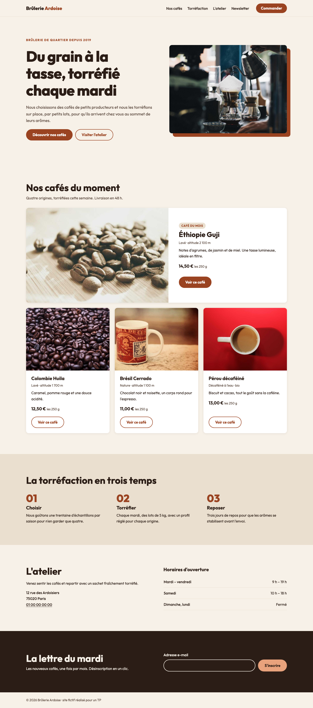
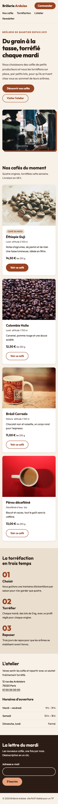

La Brûlerie Ardoise, une brûlerie de café de quartier, veut une page d'accueil fidèle à sa maquette, sur ordinateur comme sur téléphone. Vous l'intégrez en HTML et CSS, sans framework. Un test automatique compare votre page à la maquette, pixel par pixel. Un second test audite son accessibilité.
- Objectifs : structurer une page en HTML sémantique, traduire une maquette en tokens, la mettre en page avec Grid et Flexbox, la rendre responsive avec
clamp()et les container queries, puis la vérifier avec Playwright et axe. - Individuel et non noté. C'est l'entraînement de l'épreuve sur machine : travaillez comme le jour J.
- L'IA est autorisée, à une condition : comprendre chaque ligne que vous gardez. L'épreuve se fera sans IA.
- Ouvrez votre page dans Chrome à côté de la maquette et comparez souvent.
0 Le projet de départ
- Téléchargez le projet de départ, décompressez-le puis ouvrez le dossier
tp2-departdans votre éditeur. - Installez les outils puis lancez les tests :
Les deux tests de comparaison échouent : votre page est vide. C'est normal, votre objectif est de les faire passer.npm install npx playwright install chromium npm test - Lancez le serveur local avec
npm run serve, puis ouvrez localhost:4173 dans Chrome. - Créez un dépôt Git et faites un premier commit. Commitez à chaque étape.
| Fichier ou dossier | Contenu |
|---|---|
index.html | La page, à écrire. Seul le <head> est fourni |
css/style.css | Vos styles, à écrire |
css/fonts.css | La police Outfit (licence libre), hébergée dans fonts/ |
contenu.md | Tous les textes de la page et les textes alternatifs |
img/ | Les photos, avec leurs dimensions dans contenu.md |
maquette/ | Les PNG de la maquette, qui servent aussi de référence aux tests |
tests/maquette.spec.js | Les tests Playwright : comparaison visuelle et audit axe |
Je n'ai pas Node.js
Installez Node.js en version LTS puis relancez votre terminal. Vérifiez avec node -v.
M La maquette


Couleurs
| Nom | Valeur | Usage |
|---|---|---|
| Espresso | #2b1d16 | Texte, fond de la newsletter |
| Crème | #f7f1e8 | Fond de la page, texte sur fond sombre |
| Latte | #eadfcf | Bande de la torréfaction, filets, étiquette |
| Cuivre | #9a4321 | Boutons, surtitre, numéros, ombre de la photo |
| Cuivre foncé | #7e3519 | Survol des boutons |
| Cacao | #5c4a3f | Textes secondaires |
| Sauge | #3f5a4a | Anneau de focus |
| Abricot | #e8a27c | Bouton et focus sur fond espresso |
Tous les couples texte et fond de la maquette respectent un contraste d'au moins 4,5:1 (WCAG 1.4.3).
Typographie
| Élément | Taille | Graisse | Autres réglages |
|---|---|---|---|
| Texte courant | 17 px (1.0625rem) | 400 | Interligne 1,6 |
Titre h1 | de 40 px (mobile) à 68 px (ordinateur) | 800 | Interligne 1,15, lettres resserrées de 0,02 em |
Titres h2 | de 30 px à 44 px | 700 | Interligne 1,15 |
Titres h3 et légende du tableau | 22 px | 700 | |
| Surtitre | 14 px | 700 | Majuscules, espacement 0,12 em |
| Texte d'introduction | 19 px | 400 | Cacao, 34 em de large au plus |
| Origine des cafés, unité du prix, pied de page | 15 px | 400 | Cacao |
| Prix | 20 px | 700 | |
| Logo | 22 px | 800 | « Ardoise » en cuivre |
Espacements, formes et états
- Échelle d'espacement : 4, 8, 12, 16, 24, 32, 48 et 64 px. Les sections ont une marge verticale de 48 px sur mobile à 96 px sur ordinateur.
- Conteneur : 1200 px de large au plus, 16 px de marge de chaque côté sur mobile.
- Rayons : 12 px pour les cartes et la photo, boutons et champ entièrement arrondis.
- Boutons : 14 px × 28 px de marge intérieure, bordure de 2 px. Le bouton « Commander » de l'en-tête est plus petit (10 px × 20 px). Le bouton secondaire a un fond transparent et un texte cuivre.
- Cartes : fond blanc, ombre
0 2px 12pxespresso à 8 %, photos au format 4/3, contenu à 24 px des bords. - Photo d'accueil : format 4/3, ombre cuivre décalée de 8 px (mobile) à 16 px (ordinateur), sans flou.
- Survol : les boutons passent au cuivre foncé. Le bouton secondaire se remplit de cuivre. Les liens de navigation passent en cuivre et se soulignent.
- Focus clavier (absent de la maquette, mais obligatoire) : anneau de 3 px en sauge, décalé de 3 px. En abricot sur le fond espresso.
- Points de rupture : la mise en page passe sur deux colonnes à partir de 900 px. La carte du mois passe à l'horizontale quand sa propre largeur atteint 700 px.
1 La structure sémantique
Écrivez tout le contenu de index.html à partir de contenu.md, avant tout CSS. Votre page doit déjà se lire correctement sans style.
- Les zones de la page :
<header>,<nav>(avec unaria-label),<main>et<footer>. - Un seul
<h1>, puis un<h2>par section et des<h3>pour les cartes et les étapes. Chaque<section>est nommée par son titre avecaria-labelledby. - Les cafés forment une liste d'
<article>. Les trois étapes forment une liste ordonnée. - L'adresse dans un
<address>. Les horaires dans un vrai tableau, avec<caption>et des<th scope="row">. - Le champ e-mail a un
<label>relié parfor, le bontypeet unautocomplete. - Chaque image a ses attributs
widthetheight(ils évitent les sauts de mise en page) et le texte alternatif indiqué danscontenu.md. - Un lien d'évitement « Aller au contenu » en tout premier élément de
<body>, qui mène à<main>.
Vérifiez avec npm run lint : html-validate ne doit rien signaler.
Comment nommer une section par son titre ?
Donnez un id au titre et reprenez-le sur la section : <section aria-labelledby="cafes-titre"> puis <h2 id="cafes-titre">. Le lecteur d'écran annonce alors « Nos cafés du moment, région ».
Les photos des cafés ont un texte alternatif vide : est-ce une erreur ?
Non. Elles illustrent sans informer : le nom du café est juste à côté. Un alt="" les fait ignorer par les lecteurs d'écran. Ne supprimez jamais l'attribut alt : sans lui, le lecteur annonce le nom du fichier.
2 Les tokens et les couches
- En tête de
css/style.css, déclarez l'ordre de vos couches :reset,tokens,base,layoutetcomponents. - Dans la couche
tokens, traduisez la fiche de spécifications en custom properties sur:root: couleurs, police, échelle d'espacement, rayons, largeur du conteneur. - Dans la couche
reset:box-sizing, marges des titres et paragraphes, images en bloc et fluides, police héritée par les champs et les boutons. - Dans la couche
base: police, couleurs et tailles des éléments HTML nus (body, titres, liens,:focus-visible).
À partir d'ici, aucune valeur de couleur ou d'espacement ne doit apparaître en dur dans vos composants : seulement des var(--…).
Comment nommer mes tokens ?
Par catégorie puis par nom : --color-copper, --space-l, --radius-card. Restez cohérents : la même échelle partout.
3 La mise en page
Travaillez d'abord pour l'ordinateur (1440 px), section par section, en comparant avec la maquette.
- Conteneur : une classe
.containercentrée, de 1200 px au plus, qui garde 16 px de marge de chaque côté. Une seule déclaration de largeur suffit avecmin(). - En-tête : logo à gauche, navigation et bouton à droite, alignés verticalement (Flexbox).
- Bandeau : deux colonnes (texte un peu plus large que la photo), centrées verticalement (Grid).
- Cafés : une grille de colonnes d'au moins 300 px, dont le nombre s'adapte à la place disponible. La carte du mois occupe toute la première ligne.
- Cartes : le bouton reste collé en bas, même quand les textes ont des longueurs différentes.
- Étapes : trois colonnes, numérotées « 01 », « 02 », « 03 » par un compteur CSS, sans écrire les numéros dans le HTML.
- Atelier et newsletter : deux colonnes égales.
Une grille dont le nombre de colonnes s'adapte
repeat(auto-fit, minmax(300px, 1fr)) crée autant de colonnes de 300 px au moins que la largeur le permet. Pour qu'un élément occupe toute la ligne : grid-column: 1 / -1.
Coller le bouton en bas de la carte
Faites du contenu de la carte une colonne Flexbox, puis donnez au bouton margin-block-start: auto. Pour que toutes les cartes d'une ligne aient la même hauteur, pensez à la hauteur de la carte et à ses rangées de grille.
4 Le responsive
- Rendez les tailles des titres et les marges des sections fluides avec
clamp(), entre les valeurs mobile et ordinateur de la fiche. - Écrivez votre CSS pour le mobile par défaut, puis ajoutez les deux colonnes dans une requête
@media (width >= 900px). Sur mobile, la navigation passe sous le logo. - Faites de chaque élément de la liste des cafés un conteneur (
container-type: inline-size). Avec une container query, la carte passe à l'horizontale (photo à gauche) quand elle dispose d'au moins 700 px. - Testez à 390, 768, 1024 et 1440 px avec le mode appareil de Chrome. Rien ne doit déborder horizontalement.
Calculer un clamp()
La forme clamp(min, valeur fluide, max) : une valeur fluide comme 1.6rem + 3.6vw grandit avec la largeur de la fenêtre. Ajustez les deux nombres jusqu'à obtenir 40 px vers 390 px de large et 68 px vers 1440 px.
5 La comparaison visuelle
- Lancez
npm test. Chaque test capture votre page entière (1440 px puis 390 px) et la compare au PNG demaquette/. - En cas d'échec, ouvrez le rapport : il montre la maquette, votre page et les pixels différents en rouge.
npx playwright show-report - Commencez par la hauteur totale : tant qu'elle diffère, toute la suite est décalée. Corrigez ensuite section par section, de haut en bas.
- Le test tolère 3 % de pixels différents (réglé dans
playwright.config.js), car les polices sont lissées différemment selon les systèmes. Visez le vert, mais une différence d'un pixel sur un texte n'est pas une erreur.
--update-snapshots dans ce TP
Cette option remplace les captures de référence par votre page. Vous effaceriez la maquette et le test passerait toujours.
6 L'accessibilité
- Le troisième test lance axe sur votre page selon WCAG 2.2 AA. Il doit passer.
- Au clavier : rechargez la page, appuyez sur Tab. Le lien d'évitement apparaît. Parcourez toute la page : chaque élément interactif reçoit un focus visible, dans l'ordre de lecture.
- Au lecteur d'écran : avec VoiceOver (Cmd + F5 sur macOS) ou NVDA (Windows), affichez la liste des titres puis celle des régions. La structure de la page doit s'y lire.
- Activez Réduire les animations dans les réglages de votre système et vérifiez que les transitions disparaissent si vous en avez ajouté.
Le lien d'évitement est toujours visible
Placez-le en position absolue et sortez-le de l'écran avec une translation. Il revient quand il reçoit le focus (:focus-visible). Ne le masquez pas avec display: none : il ne pourrait plus recevoir le focus.
+ Pour aller plus loin
- Convertissez les photos en AVIF et servez-les avec
<picture>,srcsetetsizes. Ajoutezloading="lazy"aux photos sous la ligne de flottaison seulement. - Lancez un audit Lighthouse dans les DevTools : visez 100 en accessibilité et en bonnes pratiques.
- Proposez un thème sombre avec
prefers-color-scheme, en ne modifiant que vos tokens. - Remplacez vos requêtes
@mediapar l'imbrication native : écrivez-les à l'intérieur de la règle qu'elles modifient.
✓ Vérifier votre travail
npm run lintne signale rien (Stylelint et html-validate).- Les trois tests de
npm testpassent. - La page se lit correctement sans CSS : titres hiérarchisés, listes, tableau, formulaire.
- Aucune couleur ni aucun espacement en dur hors de la couche
tokens. - Toute la page se parcourt au clavier avec un focus visible.
- Rien ne déborde horizontalement entre 320 et 1440 px.